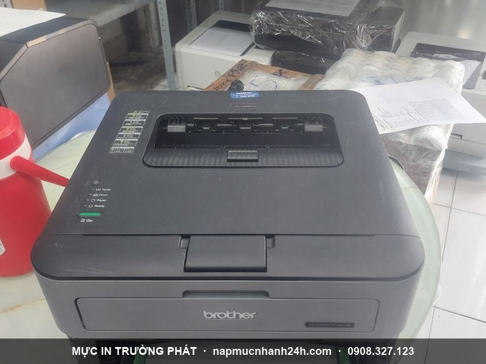
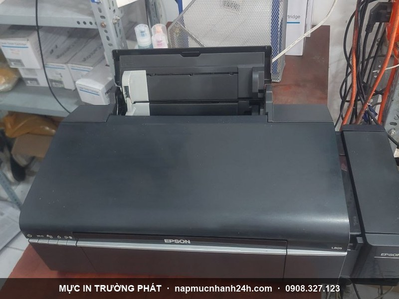

Nạp mực máy in tận nơi Quận 8 - 30 phút có mặt, chỉ từ 90.000đ
Mực In Trường Phát nhận nạp mực máy in tận nơi tại Quận 8 cho cả khách hộ gia đình, văn phòng và doanh nghiệp. Kỹ thuật viên đặt sẵn ở khu vực Quận 8 - có mặt trong 30 phút, đổ mực ngay tại chỗ, in test trước khi tính tiền, bảo hành 1 tháng. Phục vụ 24/7 kể cả thứ 7, chủ nhật và lễ.
Hotline gọi ngay: 0908.327.123 · 0819.007.394 (Zalo cả 2 số)
Nạp mực máy in tận nơi khắp Quận 8

Đội ngũ Trường Phát phục vụ toàn bộ địa bàn Quận 8, bao gồm các phường mới sau sáp nhập: Chánh Hưng, Phú Định, Bình Đông, Bình Phú và các khu dân cư dọc Phạm Thế Hiển, Tạ Quang Bửu, Dương Bá Trạc, Bến Bình Đông, đại lộ Võ Văn Kiệt. Dù anh/chị ở chợ Rạch Ông, khu Xóm Củi hay khu Bình Đông, kỹ thuật viên đều tới tận nơi trong 30 phút.
Nhận nạp mực tất cả hãng: HP, Canon, Brother, Epson, Samsung, Xerox, Ricoh, Panasonic, Oki - máy in laser đen trắng, laser màu, máy in phun và máy in kim.
Bảng giá nạp mực máy in Quận 8
| Loại máy | Giá tận nơi |
|---|---|
| Laser đen trắng phổ thông (HP, Canon thông dụng) | 90.000đ |
| Laser đen trắng cao cấp (Samsung, Xerox, Brother, Ricoh) | 120.000 - 180.000đ |
| Laser màu (HP, Canon, Brother, Oki) | 250.000 - 450.000đ / màu |
| Máy in phun (Canon, Epson, HP, Brother) | 40.000 - 80.000đ / màu |
| Mực kim (Ruy băng) Epson LQ 300/310/2170/2180 | 120.000đ |
Giá đã gồm công thợ + mực chính hãng + di chuyển trong Quận 8. Máy không có trong bảng - gọi 0908.327.123 báo model để có giá chính xác. Xem bảng giá đầy đủ tất cả dòng máy.
Nạp mực các dòng máy in phổ biến tại Quận 8
Tại Quận 8, Trường Phát nạp mực nhiều nhất các dòng máy in văn phòng và gia đình sau (mang sẵn mực + hộp mực thay thế khi đi):
| Dòng máy in | Mã hộp mực | Giá nạp |
|---|---|---|
| Canon LBP 2900, 3000 | Cartridge 303 / 12A | 90.000đ |
| HP LaserJet 1010, 1018, 1020, 1022 | 12A (Q2612A) | 90.000đ |
| HP LaserJet P1102, P1102w, M1132, M1212 | 85A (CE285A) | 90.000đ |
| HP LaserJet P2035, P2055, Pro 400 M401 | 05A / 80A | 90.000đ |
| HP LaserJet Pro M12, M15, M17 | CF279A / W1500A | 90.000 - 120.000đ |
| Canon imageCLASS MF3010, LBP6030, LBP6230 | 325 / 337 | 90.000đ |
| Brother HL-2130, 2321D, DCP-7060, MFC-7360 | TN-2130 / TN-2280 | 140.000đ |
| Samsung ML-1610, 2010, SCX-4300, M2020 | MLT-D104 / D111 | 120.000đ |
| Epson L310, L360, L805, L1300 (máy in phun) | mực nước / mực dầu | 60.000 - 80.000đ/màu |
Cần nạp gấp dòng máy khác? Gọi 0908.327.123 - kỹ thuật Quận 8 mang sẵn mực phù hợp tới tận nơi.
Sửa máy in tận nơi tại Quận 8
Không chỉ nạp mực, Trường Phát sửa chữa máy in tận nơi tại Quận 8: kẹt giấy, in mờ/sọc, không nhận lệnh in, lỗi đèn báo, thay drum, bao lụa, trục từ, rotor, lò sấy. Báo giá trước khi sửa, bảo hành 1 tháng. Chi tiết: dịch vụ sửa máy in tận nơi TP.HCM.
Bơm thay mực, bán hộp mực & thu mua máy in cũ tại Quận 8
- Bơm / thay mực: đổ mực mới hoặc thay hộp mực zin/tương thích, reset chip — làm tại chỗ trong 30 phút.
- Bán hộp mực chính hãng + linh kiện: hộp mực mới, drum, gạt, trục từ, chip cho HP, Canon, Brother, Samsung. Có hóa đơn VAT. Xem bảng giá mực & linh kiện.
- Thu mua & bán máy in cũ: thu mua máy in cũ giá cao, bán máy đã in test (Canon 2900, HP P2035, Brother HL-2130...). Đổi máy cũ lấy máy mới, đổi máy hư lấy máy lành.
Phục vụ tận các phường Chánh Hưng, Phú Định, Bình Đông, Bình Phú. Gọi 0908.327.123 báo nhu cầu (nạp mực / sửa / mua bán / thu máy) - kỹ thuật Quận 8 tới ngay.
Các lỗi máy in Trường Phát xử lý tại Quận 8
- Máy in sọc trắng, in nhòe, có chấm/đốm trên bản in, thiếu nét.
- Kẹt giấy liên tục, kẹt giấy khi in 2 mặt, không lấy giấy.
- Bấm lệnh không in, treo lệnh in, in ra font chữ lạ.
- Máy kêu to, báo đèn vàng/đỏ liên tục, không dính mực, tróc mực.
- Máy in màu không ra màu, thiếu màu.
Lỗi nặng cần sửa chữa? Xem dịch vụ sửa máy in tận nơi TP.HCM - kỹ thuật có thể vừa nạp mực vừa sửa trong cùng một lần đến.
Quy trình nạp mực tận nơi tại Quận 8
- Tiếp nhận yêu cầu qua hotline/Zalo, xác nhận lịch và địa chỉ.
- Kỹ thuật có mặt trong 30 phút (giờ hành chính), kiểm tra máy + hộp mực.
- Báo tình trạng + giá trước khi làm, chỉ thực hiện khi khách đồng ý.
- Tháo, vệ sinh hộp mực, đổ mực mới đúng dòng, reset chip nếu cần.
- Lắp lại, in test 3-5 trang - chỉ thu tiền khi khách hài lòng.
Khu vực lân cận
Trường Phát cũng phục vụ nạp mực tận nơi các quận giáp ranh Quận 8: Quận 6, Quận 5, Quận 7 và Bình Chánh.

Liên hệ nạp mực Quận 8
- Hotline 1: 0908.327.123 (Zalo · Telegram)
- Hotline 2: 0819.007.394 (Zalo · Telegram)
- Hoạt động: 24/7, kể cả lễ tết · Phục vụ: toàn Quận 8 + lân cận